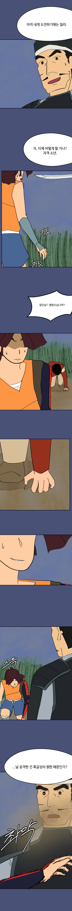
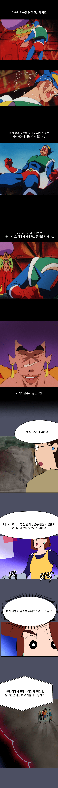

[시리즈] 짱구는 못말려 ∞기
· 짱구는 못말려 ∞기 1화 · 짱구는 못말려 ∞기 2화
· 짱구는 못말려 ∞기 3화
· 짱구는 못말려 ∞기 4화
· 짱구는 못말려 ∞기 5화
· 짱구는 못말려 ∞기 6화
· 짱구는 못말려 ∞기 6.5화
· 짱구는 못말려 ∞기 7화
· 짱구는 못말려 ∞기 8화
· 짱구는 못말려 ∞기 9화
· 짱구는 못말려 ∞기 10화
· 짱구는 못말려 ∞기 11화
· 짱구는 못말려 ∞기 12화
· 짱구는 못말려 ∞기 13화
· 짱구는 못말려 ∞기 14화
· 짱구는 못말려 ∞기 15화
· 짱구는 못말려 ∞기 16화
· 짱구는 못말려 ∞기 17화
· 짱구는 못말려 ∞기 17.5화
· 짱구는 못말려 ∞기 18화
· 짱구는 못말려 ∞기 19화
· 짱구는 못말려 ∞기 20화
BGM ON


댓글
수집 당시 댓글 33개
ㅇㅇ · 11.15 23:36:29
· 세행불필 · 11.15 23:37:53
전자박쥐(4호) · 11.15 23:37:11
· 세행불필 · 11.15 23:38:24
ㅇㅇ · 11.15 23:39:31
· ㅇㅇ · 11.15 23:53:09
ㅇㅇ · 11.15 23:47:22
박수 · 11.15 23:58:35
설탕물 · 11.16 00:08:38
카갤러1 · 11.16 00:15:31
ㅇㅇ · 11.16 00:33:28
국깡이 · 11.16 00:47:10
워머신 · 11.16 00:54:36
바붕 · 11.16 01:01:27
ㅇㅇ · 11.16 01:14:56
· 버릴계정 · 11.16 11:23:12
카갤러2 · 11.16 01:34:24
· 효부쿄스케 · 11.16 09:08:53
wet · 11.16 10:29:44
가면군 · 11.16 10:58:04
수호랑 · 11.16 17:38:25
무진잉 · 11.16 18:05:08
카갤러3 · 11.16 19:17:14
반유동고닉 · 11.17 01:39:16
ㅇㅇ · 11.17 01:47:59
· 카갤러4 · 11.17 11:42:58
카갤러5 · 11.17 11:56:55
봇치쟝 · 11.18 09:21:05
ㅇㅇ · 11.18 09:23:28
ㅇㅇ · 11.18 09:28:38
· ㅇㅇ · 11.18 17:32:31
ㅇㅇ · 11.18 11:20:03
뱀눈이 · 11.18 15:38:14